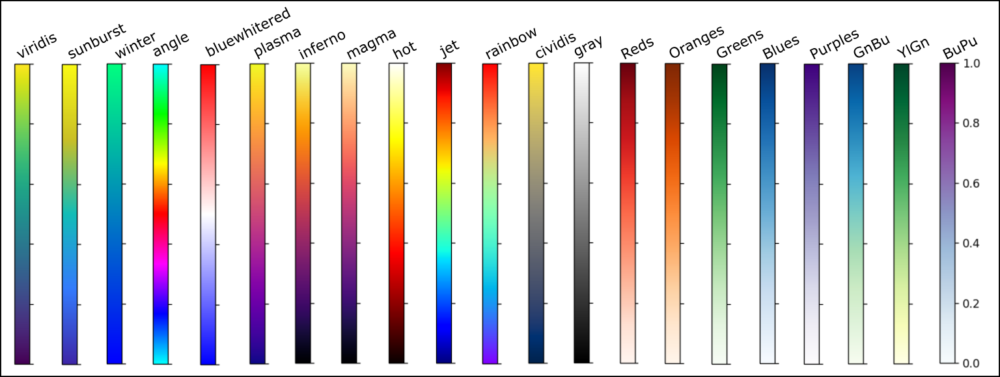

Plotting
See the ComFiT Library Reference below for a complete list of class methods and their usage.
The ComFiT package supports both the plotly (default) and matplotlib
plotting libraries.
You can easily switch between the two by setting the plot_lib attribute of the
BaseSystem class to either plotly or matplotlib, plot_lib can also be
passed as an argument to the plotting functions.
Every plotting function returns a tuple containing a fig and an ax object.
The fig object is the figure object of the plot, while the ax object represents the individual axes of the plot.
The fig object is the figure for the plot, and the ax object is a dictionary containing properties necessary for correct placement of subplots.
Default is ax = {'row': 1, 'col': 1, 'nrows': 1, 'ncols': 1}.
To show the plot, use the show function, which takes the fig object as an argument
Plotting keywords
The following list gives the keyword arguments that determine the layout of the resulting plot.
These keywords can be passed to any plot function.
bs refers to an instance of the BaseSystem class.
In some cases, default values of other parameter depend on the value of dim, and are represented by curly brackets:
| Keyword | Definition | Default value |
|---|---|---|
xlabel |
The label on the x-axis | \(x/a_0\) |
ylabel |
The label on the y-axis | \(\left \lbrace \begin{array}{c} \texttt{none} \\ y/a_0 \\ y/a_0 \\ \end{array} \right \rbrace\) |
zlabel |
The label on the z-axis | \(\left \lbrace \begin{array}{c} \texttt{none} \\ \texttt{none} \\ z/a_0 \\ \end{array} \right \rbrace\) |
suptitle |
The figure title | None |
title |
The axes title | None |
xmin |
The lower limit on the x-axis | bs.xmin |
xmax |
The upper limit on the x-axis | bs.xmax - bs.dx |
xlim |
A list or tuple consisting of the lower and upper limit on the x-axis. If xlim is provided, it trumps any provided xmin or xmax. |
None |
ymin |
The lower limit on the y-axis | \(\left \lbrace \begin{array}{c} \texttt{none} \\ \texttt{bs.ymin} \\ \texttt{bs.ymin} \\ \end{array} \right \rbrace\) |
ymax |
The upper limit on the y-axis | \(\left \lbrace \begin{array}{c} \texttt{none} \\ \texttt{bs.ymax-bs.dy} \\ \texttt{bs.ymax-bs.dy} \\ \end{array} \right \rbrace\) |
ylim |
A list or tuple consisting of the lower and upper limit on the y-axis. If ylim is provided, it trumps any provided ymin or ymax. |
None |
zmin |
The lower limit on the z-axis | \(\left \lbrace \begin{array}{c} \texttt{none} \\ \texttt{none} \\ \texttt{bs.zmin} \\ \end{array} \right \rbrace\) |
zmax |
The upper limit on the z-axis | \(\left \lbrace \begin{array}{c} \texttt{none} \\ \texttt{none} \\ \texttt{bs.zmax-bs.dz} \\ \end{array} \right \rbrace\) |
zlim |
List or tuple consisting of the lower and upper limit on the z-axis. If zlim is provided, it trumps any provided zmin or zmax. |
None |
vmin |
Lower limit on the field to be plotted. In the case of a complex function, this is the lower limit of the absolute value of the field to be plotted. | None |
vmax |
Upper limit on the value of field to be plotted. In the case of a complex function, this is the upper limit of the absolute value of the field to be plotted. | None |
vlim |
List or tuple consisting of the lower and upper limit of the value to be plotted. Only relevant for plot_field. |
None |
vlim_symmetric |
A Boolean parameter specifying whether the value limits should be symmetric. Only relevant for plot_field. |
False |
colorbar |
Boolean parameter indicating whether or not to plot the colorbar | True (if applicable) |
colormap |
String specifying the colormap to be used | Varies |
grid |
Boolean parameter indicating whether or not to plot the axes grid | False |
hold |
Boolean parameter indicating whether or not to hold the current plot | False |
opacity |
The opacity of the plot (only sometimes relevant) | 1 |
plot_shadows |
Boolean parameter indicating whether or not to plot the shadows of the objects. Only applicable for plot_complex_field. |
True |
fig |
plotly or matplotlib figure handle |
None |
ax |
matplotlib axis handle or dictionary with subplot properties |
None |
xticks |
List of ticks on the x-axis | None |
xticklabels |
List of labels for the ticks on the x-axis | None |
yticks |
List of ticks on the y-axis | None |
yticklabels |
List of labels for the ticks on the y-axis | None |
zticks |
List of ticks on the z-axis | None |
zticklabels |
List of labels for the ticks on the z-axis | None |
cticks |
List of ticks on the colorbar | None |
cticklabels |
List of labels for the ticks on the colorbar | None |
alpha |
The alpha value of the plot | 0.5 |
spacing |
The spacing between the arrows in a vector field plot | Varies |
x |
A custom 1D x-coordinate array with the same shape as bs.x. |
bs.x |
y |
A custom 1D y-coordinate array with the same shape as bs.y. |
bs.y |
z |
A custom 1D z-coordinate array with the same shape as bs.z. |
bs.z |
X |
A custom nD x-coordinate array. | None |
Y |
A custom nD y-coordinate array. | None |
Z |
A custom nD z-coordinate array. | None |
fourier |
Boolean parameter indicating whether or not the field to plot is in Fourier space | False |
Subplots
To plot multiple graphs in the same figure, use the plot_subplots function before any plotting functions. This function accepts the following arguments:
nrows(int): The number of rows in the subplot grid.ncols(int): The number of columns in the subplot grid.figsize(tuple): The size of the figure.
The function returns a tuple (fig, axs), where fig is the figure object and axs is a list of axis objects.
Following matplotlib conventions, if the subplot grid is one-dimensional, axs is a one-dimensional list of axis objects; otherwise, axs is a two-dimensional list of lists (so axs[i][j] is the axis object at the ith row and jth column).
The axs object is a list (or array) of axis objects.
The axs object is a list of (row, col) tuples; thus, axs[i][j] corresponds to the (row, col) position of the axis object in the ith row and jth column.
When plotting, pass the fig and ax objects to the plotting functions, e.g.
import comfit as cf
import numpy as np
cfi = cf.BoseEinsteinCondensate(2)
cfi.psi = cfi.x + 1j * cfi.y
cfi.plot_lib = 'matplotlib'
fig, axs = cfi.plot_subplots(2, 2, figsize=(10, 10))
cfi.plot_complex_field(cfi.psi, fig=fig, ax=axs[0][0])
cfi.plot_field(abs(cfi.psi), fig=fig, ax=axs[0][1])
cfi.plot_angle_field(np.angle(cfi.psi), fig=fig, ax=axs[1][0])
cfi.show(fig)
Matplotlib convention
The convention followed in ComFiT are as follows:
- When a plotting function is called without a keyword argument specifying the current figure or axes, then the current figure will be cleared and potential axes (in the case of matplotlib) will be created onto it. This is because with no reference to which axes the plot is meant to go ontop, there is no way of knowing.
- If a figure is provided by the keyword
fig=myfigwith, then it will be cleared and the new plot will be plotted onmyfig. This is because with no reference to which axes the plot is meant to go ontop, there is no way of knowing. - If an axes object is provided by the keyword
ax, then theaxinstance will be cleared and the new plot will be plotted onax, unless the keywordhold=Trueis provided, in which case the new plot will be plotted ontop of the old plot.
To show the current plot, one writes
which will pause the simulation until the plot window has been closed. In order to draw the image and continue the simulation, as for instance when viewing a simulation live, one needs to write
Plotly 3D properties
Plotly 3D properties
Plotly handles manipulating figures differently in 2D and 3D dimensions.
In the tool_set_plot_axis_properties_plotly function, several helper dictionaries are constructed to set the proper plotting properties.
Properties of the ax object
The ax object contains the following properties:
row, nrows # Row position and total number of rows
col, ncols # Column position and total number of columns
xaxis = 'xaxis1' # Axis identifier
yaxis = 'yaxis1' # Axis identifier
plot_dimension # Dimension of the plot
2D updates
For 2D plots, updates are saved in the layout_updates dictionary:
layout_updates = {
'xaxis_range': [0, 10], # Same format for y-axis
'xaxis_title': 'x/a0' # Title for x-axis
}
3D updates
For 3D plots, updates are organized in separate dictionaries for each axis:
xaxis_updates = {
'range': [0, 10],
'title': 'x/a0',
'tickvals': [0, 1, 2, ...],
'ticktext': ['0', 'pi', ...]
}
Similar dictionaries exist for yaxis_updates and zaxis_updates.
These are combined in the scene_updates dictionary:
Understanding kwargs vs ax dictionary
In all plot functions, there's an important distinction between the kwargs and ax dictionaries:
kwargs: Contains settings specific to the current plotax: Contains settings that apply to all plots in a given subplot
Colormaps
There is a large overlap of colormaps between matplotlib and plotly, but there are some differences.
Here is an overview over some of the available colormaps in ComFiT.

All the colormaps can be reversed by adding the _r suffix, e.g., viridis_r.
The colormaps sunburst, bluewhitered and angle have been custom made for ComFiT.
The colormap winter is not native in plotly but has been ported.
colormap: Strings describing the colormap.
colorbar: Boolean parameter indicating whether or not to plot the colorbar.
colormap_object: The colormap object, which is called in plot commands.
Plotting functions
The BaseSystem class comes pre-packaged with a number of plotting functions to plot four different types of fields.
Real fields
Real fields are fields that take real values, for example the temperature in a room.
plot_field
The plot_field function is used to plot a real field.
Example
import comfit as cf
import matplotlib.pyplot as plt
import numpy as np
fig = plt.figure()
ax1 = fig.add_subplot(131)
bs = cf.BaseSystem(1,xRes=31)
field = bs.x**2
bs.plot_field(field,ax=ax1)
ax2 = fig.add_subplot(132)
bs = cf.BaseSystem(2,xRes=31,yRes=31)
field = bs.x**2 + bs.y**2
bs.plot_field(field,ax=ax2)
ax3 = fig.add_subplot(133, projection='3d')
bs = cf.BaseSystem(3,xRes=31,yRes=31,zRes=31)
field = bs.x**2 + bs.y**2 + bs.z**2
bs.plot_field(field,ax=ax3)
plt.show()


plot_field_in_plane
The plot_field_in_plane function is used to plot a real field in a plane.
Example
import comfit as cf
import matplotlib.pyplot as plt
import numpy as np
fig = plt.figure()
ax1 = fig.add_subplot(121, projection='3d')
bs = cf.BaseSystem(3,xRes=31,yRes=31,zRes=31)
field = (bs.x**2 + bs.y**2 + bs.z**2)
bs.plot_field_in_plane(field, ax=ax1)
ax2 = fig.add_subplot(122, projection='3d')
bs.plot_field_in_plane(field, ax=ax2, normal_vector=[1,1,0],position=[10,10,10])
plt.show()


Complex fields
Complex fields are fields that take complex values, for example the electric field in a light wave.
plot_complex_field
The plot_complex_field function is used to plot a complex field.
Example
import comfit as cf
import matplotlib.pyplot as plt
import numpy as np
fig = plt.figure()
ax1 = fig.add_subplot(231)
bs = cf.BaseSystem(1,xRes=31)
field = bs.x**2*np.exp(1j*bs.x/3)
bs.plot_complex_field(field,ax=ax1)
ax2 = fig.add_subplot(232)
bs = cf.BaseSystem(2,xRes=31,yRes=31)
field = (bs.x**2 + bs.y**2)*np.exp(1j*bs.x/3)
bs.plot_complex_field(field,ax=ax2,plot_method='phase_angle')
ax3 = fig.add_subplot(233, projection='3d')
bs = cf.BaseSystem(2,xRes=31,yRes=31)
field = (bs.x**2 + bs.y**2)*np.exp(1j*bs.x/3)
bs.plot_complex_field(field,ax=ax3,plot_method='3Dsurface')
ax5 = fig.add_subplot(235, projection='3d')
bs = cf.BaseSystem(3,xRes=31,yRes=31,zRes=31)
field = (bs.x**2 + bs.y**2 + bs.z**2)*np.exp(1j*bs.x/3)
bs.plot_complex_field(field,ax=ax5,plot_method='phase_angle')
ax6 = fig.add_subplot(236, projection='3d')
bs = cf.BaseSystem(3,xRes=31,yRes=31,zRes=31)
field = (bs.x**2 + bs.y**2 + bs.z**2)*np.exp(1j*bs.x/3)
bs.plot_complex_field(field,ax=ax6,plot_method='phase_blob')
plt.show()


plot_complex_field_in_plane
The plot_complex_field_in_plane function is used to plot a complex field in a plane.
The modulus of the complex field is shown as the alpha channel, where the minimum modulus value is transparent and the maximum modulus value is opaque.
The phase of the complex field is shown as the color of the field, where the color is determined by the angle color scheme.
Example
import comfit as cf
import matplotlib.pyplot as plt
import numpy as np
fig = plt.figure()
ax1 = fig.add_subplot(121, projection='3d')
bs = cf.BaseSystem(3,xRes=31,yRes=31,zRes=31)
complex_field = (bs.x**2 + bs.y**2 + bs.z**2)*np.exp(1j*bs.y/3)
bs.plot_complex_field_in_plane(complex_field, ax=ax1)
ax2 = fig.add_subplot(122, projection='3d')
bs.plot_complex_field_in_plane(complex_field, ax=ax2, normal_vector=[0,0,1],position=[10,10,10])
plt.show()


Angle fields
Angle fields are fields that take values in the interval \([-\pi,\pi]\), for example the phase of a complex field.
plot_angle_field
The plot_angle_field function is used to plot an angle field.
Example
import comfit as cf
import matplotlib.pyplot as plt
import numpy as np
fig = plt.figure()
ax1 = fig.add_subplot(131)
bs = cf.BaseSystem(1,xRes=31)
angle_field = np.mod((bs.x)/5,2*np.pi)-np.pi
bs.plot_angle_field(angle_field,ax=ax1)
ax2 = fig.add_subplot(132)
bs = cf.BaseSystem(2,xRes=31,yRes=31)
angle_field = np.mod((bs.x + 2*bs.y)/5,2*np.pi)-np.pi
bs.plot_angle_field(angle_field,ax=ax2)
ax3 = fig.add_subplot(133, projection='3d')
bs = cf.BaseSystem(3,xRes=31,yRes=31,zRes=31)
angle_field = np.mod((bs.x + 2*bs.y + 3*bs.z)/5,2*np.pi)-np.pi
bs.plot_angle_field(angle_field,ax=ax3)
plt.show()


plot_angle_field_in_plane
The plot_angle_field_in_plane function is used to plot an angle field in a plane.
Example
import comfit as cf
import matplotlib.pyplot as plt
import numpy as np
fig = plt.figure()
ax1 = fig.add_subplot(121, projection='3d')
bs = cf.BaseSystem(3,xRes=31,yRes=31,zRes=31)
angle_field = np.mod((bs.x + 2*bs.y + 3*bs.z)/5,2*np.pi)-np.pi
bs.plot_angle_field_in_plane(angle_field, ax=ax1)
ax2 = fig.add_subplot(122, projection='3d')
bs.plot_angle_field_in_plane(angle_field, ax=ax2, normal_vector=[0,0,1],position=[10,10,10])
plt.show()


Vector fields
plot_vector_field
The plot_vector_field function is used to plot a vector field \(\mathbf v = (v_x,v_y,v_z)\).
Vector fields are usually plotted blue.
Together with the typical keyword arguments, the plot_vector_field function has the kewyword spacing which determines the spacing between the arrows in the plot.
The behavior of this plot function is dependent on the interplay between the dimension of the system and the dimension \(n\) of the vector field.
In cases where dim \(+ n > 3\), it is not possible to plot the vector field in a quantitatively accurate (QA) way.
In such cases, different scalings which results in not quantitatively accurate representations (not QA) are taken to visualize the vector field, as described in the table below, and the user is encouraged to plot the vector field components individually for quantitative analysis.
The scaling used is can be seen in the code of the plot_vector_field function, and a custom scaling can be provided by the user by setting the vx_scale, vy_scale and vz_scale keyword arguments.
These factors scale the normalized vector field (\(\frac{\mathbf v = \mathbf v }{|\mathbf v|}\)) components in the x-, y- and z-axes, respectively, as shown for \(n=3\) below.
# Normalizing
U = U / max_vector
V = V / max_vector
W = W / max_vector
# Scale factors
vx_scale = kwargs.get('vx_scale', 2*spacing*self.size_x/max_vector)
vy_scale = kwargs.get('vy_scale', 2*spacing*self.size_y/max_vector)
vz_scale = kwargs.get('vz_scale', spacing)
# Scaling
U = vx_scale*U
V = vy_scale*V
W = vz_scale*W
The following table summarizes the behavior of the plot_vector_field function.
| System dimension | \(n=1\) | \(n=2\) | \(n=3\) |
|---|---|---|---|
dim=1 |
\(v_x\) on y-axis (QA). |
\(v_x\) on y-axis, \(v_y\) on z-axis (QA). |
\(v_x, v_y\) and \(v_z\) along x-, y- and z-axes, respectively (not QA). |
dim=2 |
\(v_x\) on the x-axis. (not QA) |
\(v_x\) and \(v_y\) on x- and y-axes, respectively (not QA). |
\(v_x\), \(v_y\) and \(v_z\) on the x-, y- and z-axes, respectively (not QA). |
dim=3 |
\(v_x\) on the x-axis (not QA) |
\(v_x\), \(v_y\) on the x-, and y-xes, respectively (not QA). |
\(v_x\), \(v_y\) and \(v_z\) on the x-, y- and z-axes, respectively (not QA). |
Example
import comfit as cf
import matplotlib.pyplot as plt
import numpy as np
fig = plt.figure()
#1D system
bs = cf.BaseSystem(1,xRes=31)
# 1D vector field
ax1 = fig.add_subplot(331)
vector_field = np.array([bs.x*np.cos(bs.x/5)])
bs.plot_vector_field(vector_field,ax=ax1, spacing=1)
# 2D vector field
ax2 = fig.add_subplot(332, projection='3d')
vector_field = np.array([bs.x*np.cos(bs.x/5), bs.x*np.sin(bs.x/5)])
bs.plot_vector_field(vector_field,ax=ax2, spacing=2)
# 3D vector field
ax3 = fig.add_subplot(333, projection='3d')
vector_field = np.array([bs.x*np.cos(bs.x/5), bs.x*np.sin(bs.x/5), bs.x*np.cos(bs.x/5)])
bs.plot_vector_field(vector_field,ax=ax3, spacing=3)
#2D system
bs = cf.BaseSystem(2,xRes=31,yRes=31)
# 1D vector field
ax4 = fig.add_subplot(334)
vector_field = np.array([bs.x*np.cos(bs.y/5)])
bs.plot_vector_field(vector_field,ax=ax4,spacing=3)
# 2D vector field
ax5 = fig.add_subplot(335)
vector_field = np.array([bs.x*np.cos(bs.y/5), bs.y*np.sin(bs.x/5)])
bs.plot_vector_field(vector_field,ax=ax5,spacing=5)
# 3D vector field
ax6 = fig.add_subplot(336, projection='3d')
vector_field = np.array([bs.x*np.cos(bs.y/5), bs.y*np.sin(bs.x/5), bs.x*np.cos(bs.y/5)])
bs.plot_vector_field(vector_field,ax=ax6, spacing=3)
# 3D system
bs = cf.BaseSystem(3,xRes=11,yRes=11,zRes=11)
# 1D vector field
ax7 = fig.add_subplot(337, projection='3d')
vector_field = np.array([bs.z+bs.x*np.cos(bs.y/5)])
bs.plot_vector_field(vector_field,ax=ax7,spacing=3)
# 2D vector field
ax8 = fig.add_subplot(338, projection='3d')
vector_field = np.array([bs.z+ bs.x*np.cos(bs.y/5), bs.z + bs.y*np.sin(bs.x/5)])
bs.plot_vector_field(vector_field,ax=ax8,spacing=5)
# 3D vector field
ax9 = fig.add_subplot(339, projection='3d')
vector_field = np.array([bs.z+ bs.x*np.cos(bs.y/5), bs.z + bs.y*np.sin(bs.x/5), -bs.z + bs.x*np.cos(bs.y/5)])
bs.plot_vector_field(vector_field,ax=ax9,spacing=3)
plt.show()


plot_vector_field_in_plane
The plot_vector_field_in_plane function is used to plot a vector field in a plane.
Example
import comfit as cf
import matplotlib.pyplot as plt
import numpy as np
fig = plt.figure()
ax1 = fig.add_subplot(121, projection='3d')
bs = cf.BaseSystem(3,xRes=11,yRes=11,zRes=11)
vector_field = np.array([bs.z+bs.x*np.cos(bs.y/5), bs.z+bs.y*np.sin(bs.x/5), -bs.z+bs.x*np.cos(bs.y/5)])
bs.plot_vector_field_in_plane(vector_field, ax=ax1)
ax2 = fig.add_subplot(122, projection='3d')
bs = cf.BaseSystem(3,xRes=11,yRes=11,zRes=11)
vector_field = np.array([bs.z+bs.x*np.cos(bs.y/5), bs.z+bs.y*np.sin(bs.x/5)])
bs.plot_vector_field_in_plane(vector_field, ax=ax2, normal_vector=[0,1,1],position=[2,3,3])
plt.show()


Animation
Creating animations are typically done by exporting each frame to a png-file and then combining the frames together.
For a ComFiT instance cfi, the command to export a frame is given by
where n is the frame number (assumed to start at 0) and fig is the output of a plotting function.
If plot_lib is set to matplotlib, then fig is a tuple of the matplotlib figure and axes objects and if plot_lib is set to plotly, then fig is a plotly figure object.
An optional keyword argument ID can be given, which assigns a unique identifier to the plot, which is useful in case of running multiple simulations in parallel.
After producing the individual figures, they can be combined into an animation using the command
where n is the last frame number.
Example
Here is how one would create an animation of a field.
Angle color scheme
In many of the plotting functions, we are plotting angles, for example in plotting the phase of a complex number or the value of an order parameter on S1 . In these cases, all values modulus 2 are eqvuivalent, but if one uses a regular color scheme, this equivalence is not readily visible. Therefore, when expressing angles, we use the color scheme shown in Fig. 1.1. This has the benefit of wrapping around itself at = , stressing that these correspond


Angle color scheme. The color scheme follows the hsv color circle going through \(\theta=0\) (Red), \(\theta=\pi/3\) (Yellow), \(\theta=2\pi/3\) (Lime), \(\theta = \pm \pi\) (Aqua), \(\theta = -2\pi/3\) (Blue), \(\theta = -\pi/3\) (Fuchsia).
Technicality: The marching_cubes function and interpolation
The marching cubes algorithm is used to create a 3D surface from a 3D field and is used in creating many of the plots in three dimensions. If you are going to make changes to the codebase, then it is useful to have an idea of how it works and what the resulting quantities are.
Typically, we have our 3D system with a total resolution of, say 300, and a field field, of which we want to extract the values on some specific isosurface iso_value.
The marching_cubes function is called as follows
verts is a list of the (integer) positions of the vertices of the surfaces, e.g.,
verts =
[[x0i,y0i,z0i],
[x1i,y1i,z1i],
[x2i,y2i,z2i],
[x3i,y3i,z3i],
[x4i,y4i,z4i]]
verts =
[[ 0. 5. 1.]
[ 0. 5. 0.]
[ 1. 5. 1.]
[ 1. 5. 0.]
[ 0. 5. 2.]]
if the surface has five vertices.
faces is a list of the indices of the vertices that make up the triangles of the surface.
faces =
[[v0i,v1i,v2i],
[v3i,v4i,v5i],
... #3 hidden rows
[v2i,v1i,v0i]]
faces =
[[ 2 1 0]
[ 2 3 1]
[ 1 3 2]
[ 0 4 2]
[ 2 3 1]
[ 0 1 2]]
if the surface has six faces.
In other words, if faces[0] = [2, 1, 0], then it represents the triangle given by the three vertices
Now, it is useful to calculate the position of a point located on the surface, which is calculated by the line
which gives the position of the centroids of the triangles that make up the surface.
centroids =
[[x0c,y0c,z0c],
[x1c,y1c,z1c],
[x2c,y2c,z2c],
[x3c,y3c,z3c],
[x4c,y4c,z4c]
[x5c,y5c,z5c]]
centroids =
[[0.33333334 5. 0.6666667 ]
[0.6666667 5. 0.33333334]
[0.33333334 5. 1.6666666 ]
[0.6666667 5. 1.3333334 ]
[0.33333334 5. 2.6666667 ]
[0.6666667 5. 2.3333333 ]]
As we see, the centroids array consists of as many rows as there are faces (naturally), and each row consists of the x-, y- and z-coordinates of the centroid of the corresponding face.
In the next line, we typically create the points array, as follows:
x, y, z = np.mgrid[0:field.shape[0], 0:field.shape[1], 0:field.shape[2]]
points = np.c_[x.ravel(), y.ravel(), z.ravel()]
The points array is a list of the (integer) positions of all the points in the full 3D grid.
points =
[[x0i,y0i,z0i],
[x1i,y1i,z1i],
[x2i,y2i,z2i],
[x3i,y3i,z3i],
[x4i,y4i,z4i],
... # 300 rows total
[x299i,y299i,z299i]]
points =
[[ 0 0 0]
[ 0 0 1]
[ 0 0 2]
... # 300 rows total
[10 10 8]
[10 10 9]
[10 10 10]]
Then, we create the field_values array by
which is a (300,)-shaped array of the values of the field at the points in the points array, i.e., in the full grid.
Now we get to the interpolation, which happens by the command
which uses the information in points and field_values to interpolate the field values at the centroids of the faces of the surface.
It returns thus a (6,)-array containing the field values to be used in the plotting of the surface.
The nearest method is used to interpolate the field values, which means that the field value at the centroid of a face is the field value of the point in the full grid that is closest to the centroid of the face.